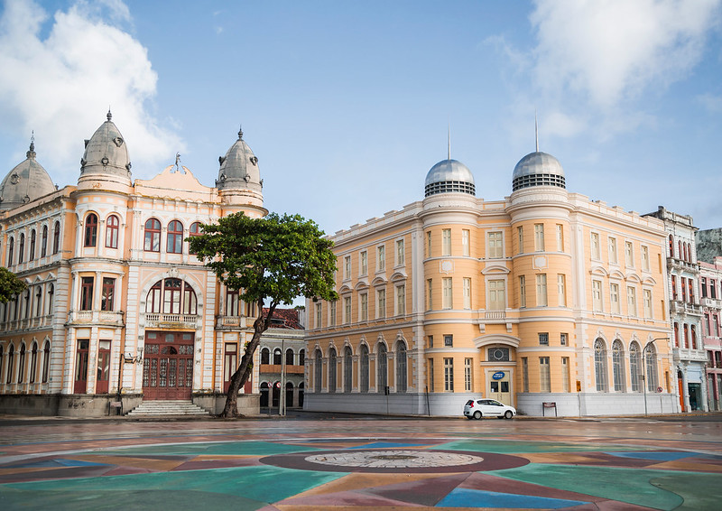

Marco Zero
O Marco Zero é um marco geográfico e histórico localizado no Recife Antigo. É o ponto de partida do quilômetro zero da BR-101, e é considerado o centro geográfico do Brasil.

O Marco Zero foi construído em 1996, como parte do projeto de revitalização do Recife Antigo. O marco é uma esfera de aço com 2,5 metros de diâmetro, localizada na Praça do Marco Zero.
O Marco Zero é um importante ponto turístico da cidade, e é um local popular para eventos e manifestações culturais.